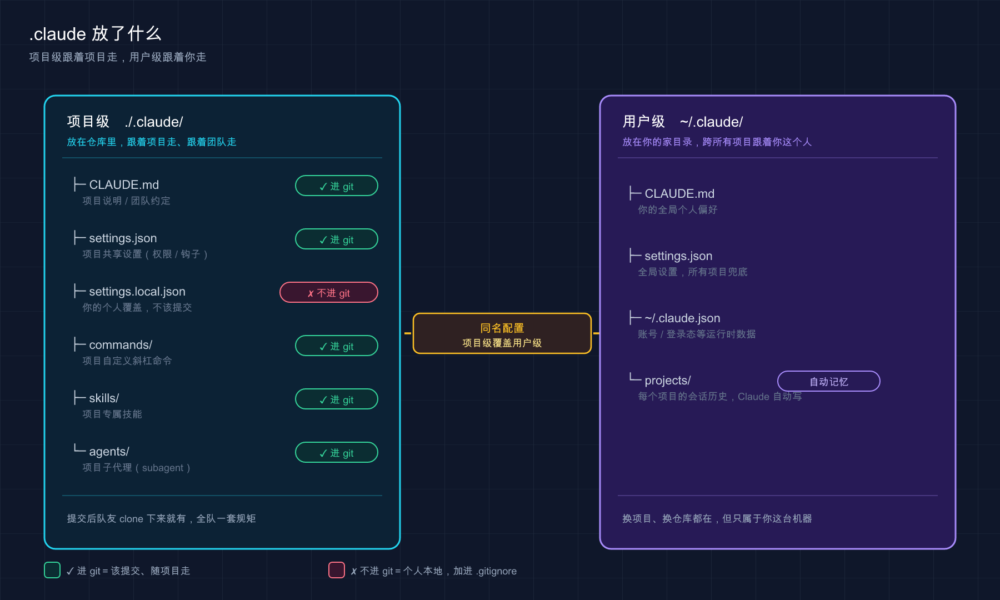

📚 系列导航：上一篇 12 项目初始化 带你跑了
/init，给项目生成了第一个CLAUDE.md。这一篇接着往下看——/init之后，你项目里悄悄多出来的那个.claude/文件夹，到底装了什么、归谁管、要不要进 git。
都说 .claude 那个文件夹「不用管，它自己会处理」，但说句实话，搞懂它你才算真正会用 Claude Code。
为什么这么讲？因为这套工具几乎所有「高级玩法」——自定义命令、权限控制、子代理、技能——落到磁盘上，全是 .claude/ 里的几个文件和目录。你不懂它的结构，遇到「为什么我配的权限没生效」「队友拉了代码却没有我的命令」这类问题，就只能干瞪眼。
我刚上手那阵子就干过一件蠢事：图省事，把一个含数据库密码的配置直接写进了 .claude/settings.json，跟着 git push 一起推上去了。等我反应过来的时候，密钥已经躺在仓库历史里了——最后只能改密码、重写历史，折腾了大半个小时。后来我才搞明白，这种东西本该放 settings.local.json，那个文件 Claude Code 默认就帮你 gitignore 了。一个文件放错地方，差别就这么大。
这一篇不教你每个文件怎么深配（那些留给后面专篇），只干一件事：给你画一张全景地图，让你看一眼某个文件就知道「它是干啥的、放哪、归项目还是归我、要不要提交」。
看完这一篇，你会拿到：
- 一张
.claude/目录的全景图：每个文件 / 子目录各管什么 - 「项目级」和「用户级」两套配置的根本区别（跟着项目走 vs 跟着你走）
- 一张速查表：哪些该提交 git、哪些必须进
.gitignore - 一个一眼就能上手的动手环节，亲眼看清这两层目录长什么样
01 先理解一件事：Claude Code 有「两个家」
先给结论：Claude Code 的配置分两摊放——一摊跟着项目走，一摊跟着你走。看懂这条，后面全顺。
类比：公司的「项目档案柜」和你自己的「工位抽屉」。 项目档案柜（项目级）放的是这个项目所有人都要看的东西——项目规范、谁能动哪些操作，新人来了照着柜子里的资料就能上手。你的工位抽屉（用户级）放的是你个人的习惯——你顺手的快捷方式、你私人的偏好，换个项目这些还跟着你。
落到磁盘上就是两个位置：
| 这一摊 | 在哪 | 影响谁 | 跟着谁走 |
|---|---|---|---|
| 项目级（Project） | 项目里的 ./.claude/ |
这个仓库的所有协作者 | 跟着项目（提交进 git，团队共享） |
| 用户级（User） | 你主目录的 ~/.claude/ |
你，在你所有项目里 | 跟着你（在你机器上，从不提交） |
这里有两个术语先点一下：
项目级（Project scope）：配置存在仓库里，进 git，全队共享。你改了规则提交上去，队友拉下来就同步生效。
用户级（User scope）：配置存在你电脑的主目录 ~/.claude/，只对你生效、永远不进任何仓库。你换到公司任何一个项目，这套都跟着你。
举个常见的用法：把「回复用中文」「commit 信息用什么前缀」这类纯个人偏好，放在用户级的 ~/.claude/CLAUDE.md 里——这样打开任何项目，Claude 都按你的习惯来。而「这个项目用 pnpm 不用 npm」这种项目事实，写进项目级的 ./CLAUDE.md，提交上去让全队共享。个人习惯和项目规范，从一开始就分两个地方放，后面省心。
💡 一句话总结：Claude Code 有「两个家」——项目里的
./.claude/（跟项目走、进 git、团队共享）和主目录的~/.claude/（跟你走、不进 git、只对你生效）。
02 打开项目级 .claude/：里面都有啥
现在把项目里那个 ./.claude/ 文件夹翻开看看。一个用起来的项目，结构大概长这样：
your-project/
├── CLAUDE.md ← 项目说明书（也可放 .claude/CLAUDE.md）
├── CLAUDE.local.md ← 你的个人项目偏好（进 .gitignore）
├── .mcp.json ← 团队共享的 MCP 服务器配置（进 git）
└── .claude/
├── settings.json ← 团队共享配置：权限、hooks、模型默认值
├── settings.local.json ← 你的个人配置覆盖（自动 gitignore）
├── commands/ ← 自定义斜杠命令，每个 .md 一条 /命令
├── rules/ ← 模块化的项目规则（CLAUDE.md 拆出来的）
├── skills/ ← 技能：可被 /调用 或 Claude 自动调用的工作流
└── agents/ ← 子代理：各有独立上下文的专项助手
逐个说它们是干什么的，本篇只点到「是什么、归谁管」，深用法各有专篇：
CLAUDE.md —— 项目说明书。
Claude 每次进项目第一个读的文件。项目是什么、怎么跑、有什么约定，都写这儿。它和 .claude/settings.json 有个本质区别：CLAUDE.md 是给 Claude 看的「指导」（它读了尽量照做，但不是硬约束），settings.json 是Claude Code 强制执行的「配置」。
官方提了个细节：
CLAUDE.md放项目根目录，或者放.claude/CLAUDE.md都行——后者能让项目根目录干净点。
CLAUDE.local.md —— 你的个人项目偏好。
叠在 CLAUDE.md 之上、只与你本人相关的指令，比如「我本地数据库是 5433 端口」。要手动加进 .gitignore（跑 /init 时选个人选项会帮你加）。
settings.json —— 团队共享的配置中心。
控制 Claude 能不能执行某些操作（权限）、在哪些时机跑你的脚本（hooks），还能设这个项目默认用哪个模型。进 git，是团队的安全基线。
settings.local.json —— 你的个人配置覆盖。
和上面同样的 JSON 格式，但只对你生效、不提交。你想临时放开个权限、又不想影响队友，就写这儿。Claude Code 第一次写这个文件时，会自动帮你配 git 忽略它——这就是开头那个「本该用上、却被漏掉」的文件。
这里有个细节官方点了名：它把忽略规则加到的是你全局的
~/.config/git/ignore（不是项目里的.gitignore），所以你翻项目的.gitignore是找不到这行的。想让全队都忽略它，得自己再往项目.gitignore里补一行。
commands/ —— 自定义斜杠命令。
目录里每个 .md 文件，就变成一条 /文件名 命令。把你反复输入的那段指令存成文件，下次敲 / 就能调。官方已将 commands/ 和 skills/ 统一为同一底层机制，新建命令推荐用 skills/（支持打包附属文件），commands/ 继续兼容但不再是推荐路径。
rules/ —— 模块化的项目规则。
当 CLAUDE.md 写太长（官方建议控制在 200 行内），就把规则按主题拆成 rules/ 下的多个文件，比如 testing.md、api-design.md。
skills/ —— 技能。
每个技能是一个子目录，里面有个 SKILL.md。它既能你手动 /技能名 调用，也能让 Claude 根据任务自动判断该不该用。
agents/ —— 子代理。
每个 .md 定义一个有独立上下文窗口的专项助手，主对话脏不到它。适合并行干活或隔离任务。
.mcp.json —— 团队共享的 MCP 服务器配置。
放在项目根目录，和 .claude/ 并列。MCP（Model Context Protocol）服务器可以在两个地方配：这里的 .mcp.json 是进 git 给全队共享的，比如团队都要用的数据库工具或内部 API；而个人的 MCP 配置（比如只你自己在用的工具）存在 ~/.claude.json 里，不会进任何仓库。两者的区别就是：项目共享 vs 个人私用。
💡 一句话总结：项目级
.claude/里，CLAUDE.md/rules/是给 Claude 看的「指导」，settings.json是 Claude Code「强制执行」的配置，commands/skills/agents/是你给它装的「扩展」。
03 同样的目录，~/.claude/ 里也有一套
这是最容易绕晕新手、但其实最简单的一点：上面那些目录名，在用户级的 ~/.claude/ 里几乎原样再有一份。
commands/、rules/、skills/、agents/、CLAUDE.md、settings.json——这些在项目里有，在 ~/.claude/ 里也有。区别只有一个：
（用户级 ~/.claude/ 还有几个项目级没有的独有目录——themes/、keybindings.json、output-styles/、workflows/ 等，留给后续专篇逐一介绍。）
放在 ~/.claude/ 下的，对你所有项目生效；放在项目 ./.claude/ 下的，只对那一个项目生效。
举两个用法你就懂了：
- 一个
/commit-zh命令（生成中文 commit 信息），放在~/.claude/commands/里——这样在任何项目都能用，不用每个项目重配一遍。 - 但「部署到公司测试环境」这种命令，明显只跟那一个项目有关，就放进项目的
.claude/commands/，提交上去给全队用。
除了这些「双胞胎」目录，~/ 主目录下还有两个只在用户级出现、而且你基本不用手动碰的文件，认个脸就行：
| 文件 / 目录 | 在哪 | 是什么 | 你要不要管 |
|---|---|---|---|
~/.claude.json |
主目录 | 应用状态：登录态（OAuth session）、主题、个人 MCP 服务器、各项目的信任记录及 UI 偏好 | 基本不碰，靠 /config 改 |
~/.claude/projects/ |
用户级 | 各项目的会话记录；自动记忆就放在它的 <项目>/memory/ 子目录里 |
不用写，它自己维护 |
这里多说一句自动记忆（auto memory）：它和 CLAUDE.md 是两套东西。CLAUDE.md 是你写给 Claude 的指令；自动记忆是 Claude 自己写给自己的笔记（比如它摸清了你的构建命令、踩过的坑），存在 ~/.claude/projects/<项目>/memory/ 下，跨会话复用。这俩别搞混：一个你写、一个它写。
💡 一句话总结：
commands/skills/这些目录项目级和用户级各有一套，区别只是「管一个项目」还是「管你所有项目」；~/.claude.json和~/.claude/projects/是用户级专属、你基本不用手动碰。
04 哪些进 git，哪些千万别提交
这一节最实用，开头那个泄露密钥的坑就栽在这。先给铁律：带「local」的、含密钥的，一律不进 git。
为什么有的提交有的不提交？逻辑很简单——团队要共享的就提交，只跟你或你这台机器有关的就别提交。
类比：项目档案柜的东西要登记入库（进 git），你工位抽屉里的私人物品不用上交。
把项目里常见的文件按「该不该提交」分个类，照着这张表办就不会错：
| 文件 / 目录 | 进 git？ | 为什么 |
|---|---|---|
CLAUDE.md |
✅ 提交 | 团队共享的项目说明 |
.claude/settings.json |
✅ 提交 | 团队共享的权限 / 配置基线 |
.claude/commands/*.md |
✅ 提交 | 团队复用的标准化命令 |
.claude/rules/*.md |
✅ 提交 | 团队共享的模块化规则 |
.claude/skills/、.claude/agents/ |
✅ 提交 | 团队共享的技能与子代理 |
.claude/settings.local.json |
❌ 不提交 | 个人覆盖；Claude Code 自动帮你 gitignore |
CLAUDE.local.md |
❌ 不提交 | 个人项目偏好；需你手动加进 .gitignore |
| 任何含密钥 / token / 密码的文件 | ❌ 绝不提交 | 进了仓库历史就等于泄露 |
几个实用的提醒：
settings.local.json 不用你操心 gitignore。 官方明确写了：Claude Code 在创建这个文件时，会自动配置 git 忽略它。你想本地临时放开个权限，写这儿最稳。
CLAUDE.local.md 要你自己加 .gitignore。 它和 settings.local.json 不一样，不会自动忽略——跑 /init 选「个人」选项时会帮你加，否则记得手动加一行。
密钥永远别硬写进任何配置文件。 官方推荐的做法是在配置里用环境变量引用，比如写 ${GITHUB_TOKEN} 而不是把 token 明文贴进去——Claude Code 启动时从你的 shell 环境读，token 根本不落到文件里。这条建议雷打不动地执行。
💡 一句话总结：团队共享的（
CLAUDE.md、settings.json、commands/等）进 git；带「local」的和任何含密钥的绝不提交——settings.local.json系统自动帮你忽略，CLAUDE.local.md要你手动加。
05 配置冲突了听谁的：优先级一张图讲清
你可能已经想到一个问题：用户级 settings.json 和项目级 settings.json 都设了同一项，到底听谁的？
官方给的优先级顺序是这样的（从高到低）：
Managed（组织托管，最高，谁都盖不住）
↓
命令行参数（--permission-mode 这类，仅当次会话）
↓
Local（settings.local.json）
↓
Project（项目 settings.json）
↓
User（用户 ~/.claude/settings.json，最低）
记忆口诀：越「具体」、越「靠近当前这次操作」的，优先级越高。 组织管的 > 你这次命令行临时指定的 > 你这个项目本地的 > 项目共享的 > 你全局默认的。

这张图把两棵树并排摆开：左边项目级 ./.claude/（跟着项目走、按需进 git 给团队共享），右边用户级 ~/.claude/（跟着你这个人走、管你所有项目）——记住哪棵树管什么，后面配置往哪放就不会乱。
但这里有个特别容易踩的坑，必须单独拎出来——不是所有设置都遵守「覆盖」逻辑：
| 设置类型 | 多作用域同时存在时 | 例子 |
|---|---|---|
| 标量值（单个值） | 取最具体的那个，覆盖 | model：项目设了就用项目的 |
| 数组值（列表） | 跨作用域合并，不覆盖 | permissions.allow：用户的 + 项目的 + 本地的叠加 |
这个区别很容易吃亏：我自己就栽过一次——在用户级 settings.json 里 deny 了某个命令，本以为从此全局禁用，结果换到一个项目里它照跑不误，当时我盯着配置看了半天没想通。后来才搞清楚，权限规则是合并的、不是覆盖的，项目级 allow 了，会和用户级的规则叠在一起评估。所以权限别指望靠用户级「一刀切禁掉」，得搞清楚合并规则。
💡 一句话总结：优先级从高到低是 Managed → 命令行 → Local → Project → User；但要分清——
model这类标量是「覆盖」，permissions.allow这类数组是「合并叠加」。
06 动手：亲眼看清这两层目录
光看图不如自己扒一眼。下面这套命令只读不写，安全得很，照着敲就能把「两个家」看个明白。
第一步：看你主目录的用户级 ~/.claude/
打开终端，敲（Mac / Linux）：
ls -a ~/.claude
Windows PowerShell 用：
dir $HOME\.claude
预期：你会看到 settings.json、projects、可能还有 commands、skills 等——具体有哪些取决于你用 Claude Code 多深。只要列出了东西，就说明用户级这个「家」是存在的、在生效的。
第二步：在一个项目里看项目级 .claude/
随便 cd 进一个你跑过 Claude Code 的项目（没有的话，回上一篇用 /init 建一个），然后：
ls -a .claude
预期：至少能看到 settings.local.json（你之前批过权限的话），可能还有 settings.json。这就是项目级的「档案柜」，和主目录那个是两套。
第三步：验证 settings.local.json 确实被 git 忽略了
在这个项目里（得是个 git 仓库），敲：
git check-ignore .claude/settings.local.json
预期：终端回显出这个文件路径（.claude/settings.local.json），就证明它已经被 git 忽略了——这正是 Claude Code 自动帮你做的。如果什么都没输出，说明它没被忽略，你最好手动把这行加进 .gitignore。
第四步（可选）：瞄一眼项目说明书
cat CLAUDE.md
（Windows PowerShell 用 type CLAUDE.md）
预期：打印出上一篇 /init 生成的内容。这就是 Claude 每次进项目第一个读的文件，现在你知道它躺在哪了。
⚠️ 一个提醒：
git check-ignore只在 git 仓库里有意义。要是这个项目还没git init，这条命令会报fatal: not a git repository，先把它变成 git 仓库再试。
💡 一句话总结：
ls -a ~/.claude看用户级、ls -a .claude看项目级、git check-ignore .claude/settings.local.json验证忽略——三条只读命令，把「两个家」和「谁被 git 忽略」一次看清。
07 小结
这一篇我们把 Claude Code 在项目里的「家底」摸了一遍。串起来回顾：
| 你记住的 | 具体是什么 |
|---|---|
| 两个家 | 项目 ./.claude/（跟项目走、进 git）+ 主目录 ~/.claude/（跟你走、不进 git） |
| 指导 vs 配置 | CLAUDE.md / rules/ 是给 Claude 的指导；settings.json 是强制执行的配置 |
| 双胞胎目录 | commands/ skills/ agents/ 项目级和用户级各一套，区别是管一个还是管全部 |
| git 红线 | 带「local」的、含密钥的，绝不提交；settings.local.json 系统自动忽略 |
| 优先级 | Managed → 命令行 → Local → Project → User；标量覆盖、数组合并 |
你现在应该能： 打开任何一个项目，看一眼 .claude/ 里的某个文件就知道它是干什么的、归项目还是归你、要不要提交；也知道配置冲突时该听谁的。这张全景地图就是后面所有专篇的底图——之后学 settings.json 怎么细配、CLAUDE.md 怎么写好、技能和子代理怎么造，你都能在这张图上找到它的位置。
下一篇 14「交互界面与快捷键」——目录结构这张「静态地图」看明白了，接下来该把 Claude Code 的「操作面板」摸熟了。下一篇带你认全那个界面里每一块、再把最常用的快捷键练成肌肉记忆，让你敲得又快又稳。